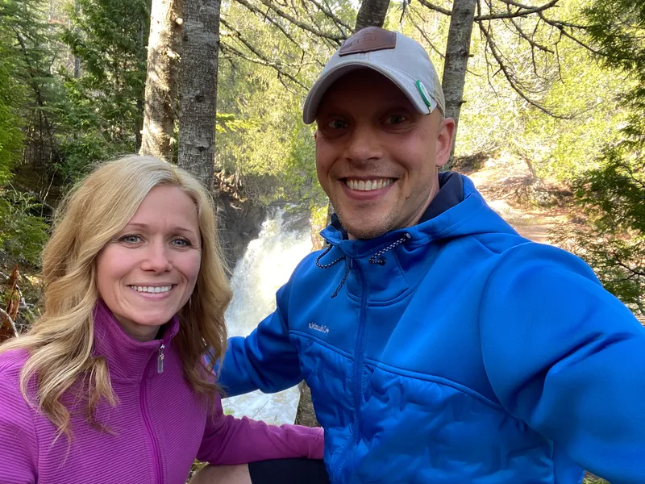

I thought Transylvania was a place Hollyweird made up
When Max was 11 years old watching the 1992 Barcelona Olympics, his heart was pierced when he watched the Romanian women's Gymnastic team compete. They did an expose on how the Romanian gymnysts trained in very tough conditions. In 1992, Romania had just come out from under Communism in 1989 and were learning to embrace their new freedom. God set his heart on fire for Romania but kept it dormant until the appropriate time.
From 1993-2011, Max was very involved with Hockey Ministries International Christian Athlete Hockey Camps. During these years he attended as a camper, counselor, dry-land instructor, on-ice instructor and eventual evening chapel leader and speaker. From 2007-2011, he was on staff with HMI as a Hockey missionary bringing the gospel of Christ to hockey players of all ages. In 2012, Max joined up with a local ministry; International Ministerial Fellowship (IMF) where he currently serves, while still partnering with HMI.
In April of 2012, Max served with Youth With A Mission (YWAM) and did a Sports Discipleship Training School. He arrived in Kona, Hawaii and spent three months going through intense Bible teaching and practical application on how to serve others and share the gospel effectively through sports. Following his training, we were sent out on outreach for 9 weeks. Max had two locations, 3 weeks in Romania followed by 6 weeks in London for the Olympics. Remember Max saying, "God set my heart on fire for Romania but kept it dormant until the appropriate time." Now was the appropriate time.

On July 9th, 2012 Max met his future wife (Mariana), he just didn't know it yet! They spent one week together teaching kids the game of baseball and having small group bible studies and sharing personal testimonies of God at work in their lives. YWAM had a strict rule, no dating during outreach. He took that seriously. He went to his YWAM leader and asked for a new translator because he wa s very attracted to Mariana. My leader smiled and said, "this is good for you, serve with Mariana and leave it at that." He trusted his leader and did as he was told. After their week together, they never saw each other again before Max left Romania. However, God was working his plans out in both their lives during this time a part.
Mariana's desire in a husband in her words, "was not to have a milquetoast husband." She wanted a husband to be able to deliver a clear message in public about answering questions biblically. Another quality that she admired when they first met, is that Max was a man of prayer and she was also encouraged about how well he spoke of his parents. Mariana wanted a dedicated follower of Christ that would lead her spiritually for the rest of her life. For Max, that was a lot of pressure, "GOOD PRESSURE and GOOD ACCOUNTABILITY." In her word's, "that's a full time job!"
They dated for 2-1/2 years. He visited Romania 2 times, first to meet her family and second to have their pre-wedding, which helped with her immigration process. Mariana came here twice, 3 months at a time. They were engaged May 31st, 2014 and had their Romanian wedding August 30th, 2014. After our Romanian wedding, Max flew home and Mariana stayed in Romania for the next 7 months. They had made a commitment to abstain from the marriage benefits as husband and wife until their Legal American wedding 7 months later on April 25th, 2015. Six weeks after our Romanian wedding, Mariana's father was diagnosed with a Septic blood infection that started in his leg. Mariana saw this as a great opportunity to ask difficult questions to her father about what he believed and why. Mariana wanted to make sure he understood his assurance of salvation in Christ. Nobody knew how little time he had left. He died 10 days later. The time Mariana had with her father was of great importance and comfort to her and for her mother.
The next 7 months were hectic leading up to our wedding on April 25th, 2015. A few years prior, Mariana's mother had been diagnosed with breast cancer and did the standard protocol with Chemo therapy and radiation. Max never got the chance to see Mariana's mother as healthy, vibrant and full of life. The little he did spend with her, she mostly was in pain and the cancer moved from her breasts and into her bones, very painful. Mariana's mother was able to watch our wedding live via Skype. Two months later she died from her battle of breast and bone cancer.
At our wedding, Max shared that God is very specific and strategic and his plans are perfectly planned out. Mariana and I go for walks everyday and often times she asks the question, "How did I get here?" The simple answer is God brought us together. When a man and a woman get married, they come together to form one life in Christ.